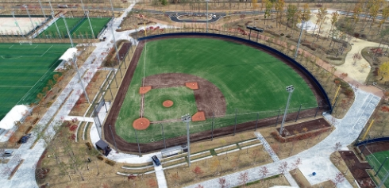

이용 안내
서비스 이용 안내
- 이용시 주의사항
- 각 시설의 규정 및 허가조건을 반드시 준수하여야 합니다.
- 각 시설물과 부대시설을 이용함에 있어 시설물 관리 담당자와 협의 후 사용합니다.
- 이용자가 고의 또는 과실로 인하여 시설물이 파손되었거나 환경이 오염되었을 경우 이용자가 원상회복을 하거나 배상할 책임이 있습니다.
- 본인 부주의 등으로 인한 신체적 상해 및 사고 발생시 구장에서는 책임지지 않습니다.
- 시설이용료 납부는 각 시설별 예약시 규정하는 기간 내에 납부하시기 바랍니다.
- 각 시설예약방법은 시설운용의 효율성 제고를 위해 야구장 방침에 따라 변경될 수 있습니다.
- 이용시 제한사항
- 공공질서를 저해하는 행위, 사용자 간의 다툼, 고성, 폭력 등과 같은 행위를 하실 경우에는 퇴장조치가 있을 수 있습니다.
- 각 시설물을 이용하여 영리를 목적으로 강습을 할 수 없습니다.
- 이용신청을 하지 않고 시설을 이용하는 등 시설 관리 운영에 적합하지 않다고 인정되는 경우 이용에 제한이 있을 수 있습니다.
- 매크로 프로그램 사용 적발 시, 이용제한(영구정지 등)될 수 있으니 각별히 주의하시기 바랍니다.

야구장
총 1면으로 구성되어 있으며, 포장재질은 인조잔디와 소성토, 규격은 KBO야구장 실행발전위원회에서 발간한 야구장 건립메뉴얼의 정규야구장 규격을 준수하였습니다. 기록실, 덕아웃, 볼펜 등 경기에 필요한 시설들이 모두 설치되어 있습니다.